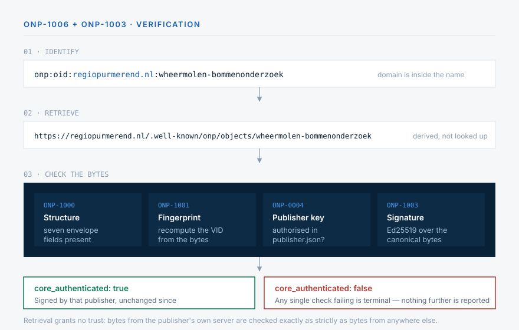
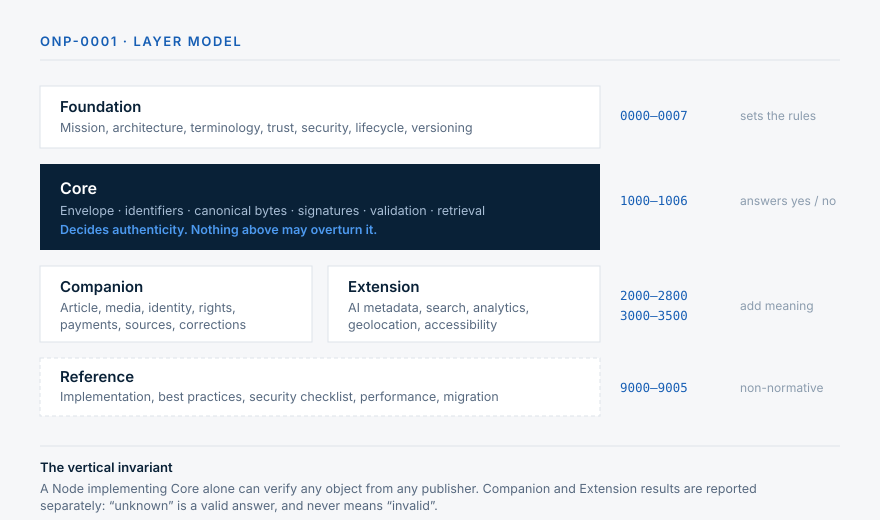

Open standard · Working Draft
News that proves its own origin.
An article published under ONP carries its own evidence. Anyone can check who published it and whether a single character has changed since - without asking a platform, a gatekeeper, or even the website it came from.
Try it - nothing leaves your browser
Break this article and watch it say so.
A real signed news object. Change one letter in the headline, alter the date, swap the publisher - the checks below run again as you type.
- ·Envelope structureONP-1000
- ·Content fingerprintONP-1001
- ·Publisher keyONP-0004
- ·SignatureONP-1003
Ed25519 · SHA-256 · RFC 8785 canonical JSON, computed locally.
Demo keypair, published on purpose.
The reader's view
A badge on the article itself.
This is what a reader sees. The badge below verifies the signed object live, in your own browser, and says whether it is authentic. Two copies of the same article - one genuine, one altered after signing. Click a badge for who signed it and when.
Fusie-onderzoek Purmerend gepubliceerd
Checkon · 30 July 2026
NEP: Purmerend stapt uit de EU
Checkon · 30 July 2026 · altered after signing
Powered by the published onp-badge web component, loaded from a CDN - a publisher
drops in one line and the reader's browser does the checking. The example uses a demo key.
A complete article whose badge verifies the text, three photos and their photographer credit, reuse rights and revenue split, its correction history, and an attached source document - all in your browser. Edit the headline or swap a photo and watch the seal react.
The idea
Trust the object, not the messenger.
Today, an article is trusted because of where you found it. Move it - a screenshot, a forward, a scrape, an AI summary - and the evidence stays behind. ONP moves the evidence into the article itself, so it survives the journey.
Origin travels with the text
Every version carries its own signature. Checking one takes the bytes and the publisher's public key file - no login, no API, no permission.
Any channel still works
ONP standardises the article, not the pipe. The same signed object rides your site, your feed, email, or a protocol nobody has written yet.
Terms stated in the work
Reuse and AI-training terms are signed along with the article, so removing them breaks the signature instead of passing unnoticed.
Payment terms attach to the article
Compensation signals are bound to the piece by signature rather than living in a contract only two parties can see.
From identifier to answer
Four steps, no coordination required.
Two parties who have never met and share no configuration can still exchange an article and agree on whether it is authentic. That is the whole design goal.
The identifier contains the publisher
onp:oid:regiopurmerend.nl:wheermolen-bommenonderzoek - the domain is
part of the name, so nothing has to be looked up in a registry.
The address follows from the identifier
It becomes https://regiopurmerend.nl/.well-known/onp/objects/wheermolen-bommenonderzoek
mechanically. No resolver service, no discovery protocol, no directory to join.
The publisher lists its own keys
A small file at /.well-known/onp/publisher.json says which keys are
authorised, and when older ones stopped being valid. Domain control is the trust anchor.
The bytes answer for themselves
Recompute the fingerprint, check the signature against the authorised key. The article is authentic or it is not - and the reader never had to trust whoever handed it over.

Retrieval grants no trust of its own. An object fetched straight from the publisher's own server is checked exactly as strictly as one found on a stranger's hard drive.
The standard
Thirty-six documents, layered on purpose.
Core answers what an article is and whether it verifies. Everything else - article structure, rights, payments, AI metadata - is layered on top and can never change that answer.
| Series | Layer | What it settles |
|---|---|---|
| 0000-0007 | Foundation | Mission, architecture, terminology, trust and security models, lifecycle, versioning policy |
| 1000-1006 | Core | The envelope, identifiers, canonical bytes, signatures, validation, retrieval |
| 2000-2900 | Companion | Article, media, identity, rights, payments, sources, corrections, comments, endorsement |
| 3000-3500 | Extension | AI metadata, search, analytics, geolocation, accessibility |
| 9000-9005 | Reference | Reference implementation, best practices, security checklist, performance, migration, external standards |

Implementations
Two codebases that agree byte for byte.
A standard only exists when independent implementations can interoperate. ONP includes a TypeScript reference implementation and an independent PHP implementation. Continuous integration verifies that both produce identical bytes from the same document and accept each other's signatures, ensuring consistent behaviour across ecosystems.
Reference SDK
Install with npm install open-news-protocol. Signing (Ed25519 and ECDSA-P256), canonicalisation, trust anchor resolution, retrieval, multi-level validation, a consumer-node aggregator that builds a verified multi-publisher timeline, and an onp command-line tool. Pure-JS crypto, so it runs on Node, browsers and the edge. 94 tests.
ONP Connector plugin
Turns a WordPress site into a publisher: signs each post along with its photo credits, reuse rights, revenue split, source documents and correction history, serves its key record and object URLs, and embeds the reader-facing badge automatically. Written for the CMS most newsrooms already run.
Cross-checked in CI
PHP re-verifies the TypeScript test vectors; TypeScript validates PHP-signed objects and a whole publish-edit-retract history. A one-byte divergence fails the build.
Status: every document is a Working Draft and nothing has been through external review yet. The specifications, the reference code and the known gaps are all public - that is the point of publishing this early.